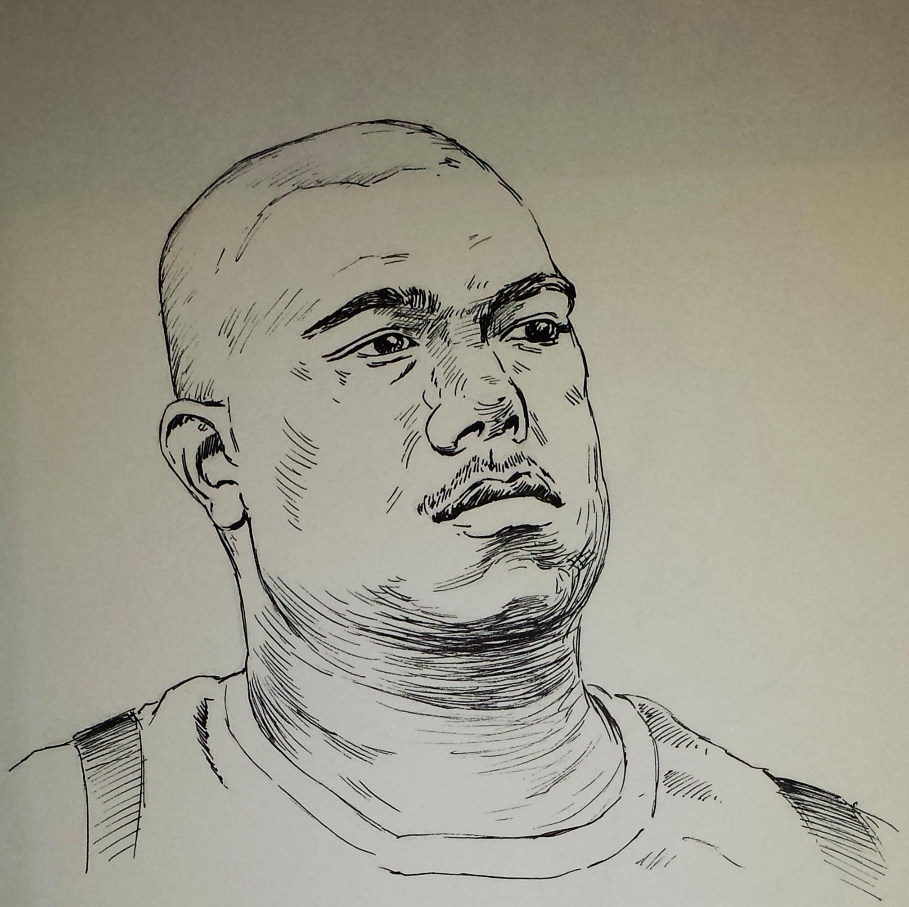
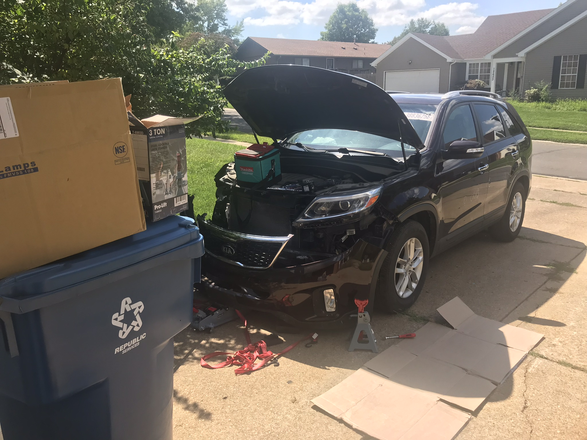

Born and Raised in Las Vegas, there isn't much to tell. I left Vegas because it's nothing but Casinos and dirt and asphalt. I do miss the food though. I haven't had a decent enchilada in years.
 So, to explain my journey as a coder, I must state that I hate(d) code. I have been exposed to code when I was a kid using Linux because my allowance didn’t allow for upgrades to keep up with planned obsolescence, when I had to learn how to modify drivers for stuff to work. At least in my mind this was coding, and it was a nightmare. I was exposed to code when I was when I got tired of grinding in World of Warcraft and started botting, using C# so that I was essentially a higher level of script-kiddie. But most important is that I knew just enough code and IT skills to be dangerous, and so I broke my computers way more than was reasonable and I learned to fix them but also grew to distrust computer science.
In University I chose a degree in Industrial-Organizational Psychology, a fancy name for work psychology. As this degree was, at one point, called Quantitative Psychology there was a lot of statistical analysis involved. That is how I became a reluctant coder. I like statistics and initially learned the minimum code necessary to operate the existing algorithms but this very simple scripting and function writing, like Pythons purpose in LC101, gave me a taste of how easy coding had become relative to my earlier experiences. I discovered that I like statistics and wanted to do more and so I went the extra step to learn R. If you don’t know R, it’s basically a high-level language, designed specifically for statistical coding and competes with Python in the Data Science space. I later discovered that it differs from most languages in a single way, it’s Base 1 instead of Base 0.
So, I realized a little late, but not too late, that I should have gotten a CS degree. I am a formerly-reluctant coder who has a lot of self-taught coding experience (R/C#/JavaScript/HTML and I think I learned like 5 minutes of BASIC when I was a kid) but nothing I can show on a resume and frankly I could use some of the foundation I skipped. LC101 was the answer because I don’t want to pay 10-15k$ for a bootcamp and I am also likely to put off self-learning and developing a GitHub portfolio.
Isn't that a cool picture someone made turning the Arch into a Stargate? So that's a good segue into things I like. I spend far too much time watching TV. Most of the time it's reruns of Star Trek, Stargate, The Office or The Mentalist. I also really like Korean TV. 90% of their content is single seasons of 14-26 episodes so there is a plan from start to finish and they don't get cancelled. American TV has hurt me far too many times which is why I mostly watch reruns and rarely give anything new a chance.
This is a great gif that shows off my favorite American cartoon and also signals the fact that I am a bit of a loner. I am not anti-social by any means but I'm not from St. Louis. Making friends as an adult can be weird in a normal town but the St. Louis dynamics are special. So much so that I've read articles about it and there are companies that specialize in helping St. Louis transplants network and make friends.
At this point I am just adding pictures to have extra content. This gif and the one below it come from my favorite anime, Swort Art Online. The best thing about the one below is that it shows how anime breaks the fourth wall by ripping off other IP. That is obviously a lightsaber and they make a joke about it being called a few things and "one more they can't remember".
The last hobby I can think of is Aquaponics (aside from the obvious computers, gaming, and home automation) the combination of aquaculture which is breeding fish and hydroponics which is growing plants in a soilless substrate. I have a setup in my basement that overgrew and gave me nightmares about my house being overtaken by tomato plants. I now understand why there is a movie called Attack of the Killer Tomatoes.
 I am also fixing up a vehicle I purchased at Salvage auction. If this works out it might become a new hobby and side income. My dad flips properties, but that is too deep for my pockets right now but perhaps I can resurrect vehicles.